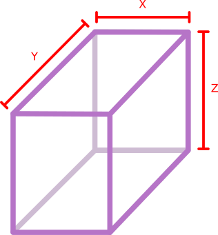
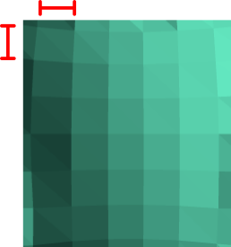
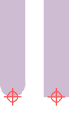
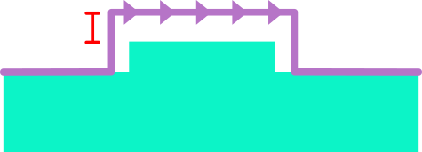
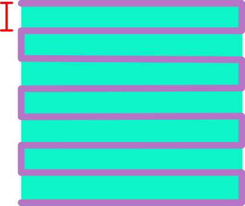
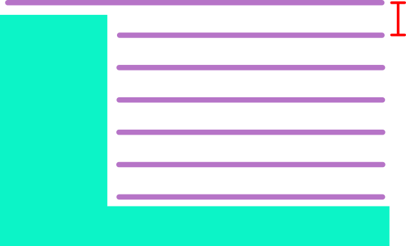
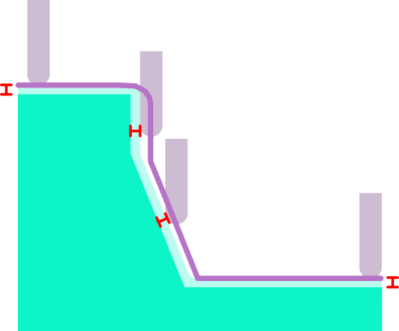

This is a lot of triangles! This could make the "Process surface" operation very slow, but won't have an effect after that.
XY origin:
Z origin:
The bounding box of the model. For each axis, the minimum, maximum, and total size is shown.

Bounds:
Fit to stock
Stock X:
Stock Y:
Stock Z:
Scale, %:
The physical size represented by each pixel of the heightmap.

XY Resolution:
Heightmap:
px
Large heightmaps increase processing time for all operations. Try increasing the "XY Resolution" value to reduce the size of the heightmap. Tip: start with a low-quality heightmap while setting up your jobs, and switch to a finer resolution at the end to export your G-code.
0.25 mm is slow on complex models; use 0.5-1 mm while setting up.

Tool shape:
Tool diameter:
XY feed rate:
Z feed rate:
Height to move above the part for rapid moves. This is relative to the top surface of the bounding box.

Rapid Z clearance:
Negative rapid Z clearance can cause rapid movements to crash into the part.
Spindle:
rpm
Tool preset:
Cut direction:
Perpendicular distance between consecutive passes.

Step over:
Step over should be smaller than tool diameter.
Maximum deviation of a flat surface, if cut by a ball-nose end mill with the given diameter and given step over.
Nominal deviation:
Maximum depth of cut for a single pass. Where the required depth exceeds this amount, it will be achieved with multiple passes.

Step down:
Distance to keep tool away from finished model geometry. This leaves material for a finishing pass to clean up.

Stock to leave:
Negative stock to leave will make the part smaller than the model. This is untested and usually not what you want.
Rough estimate of how long it will take for the job to complete assuming infinite acceleration. Adjust your machine parameters using the "Edit -> Settings..." menu.